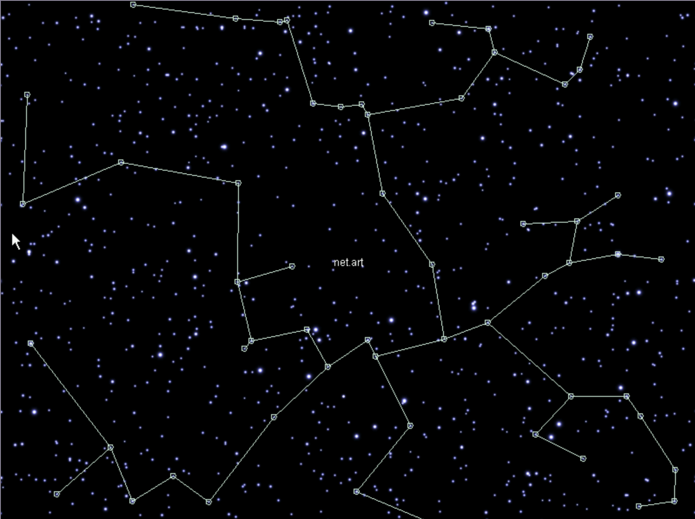
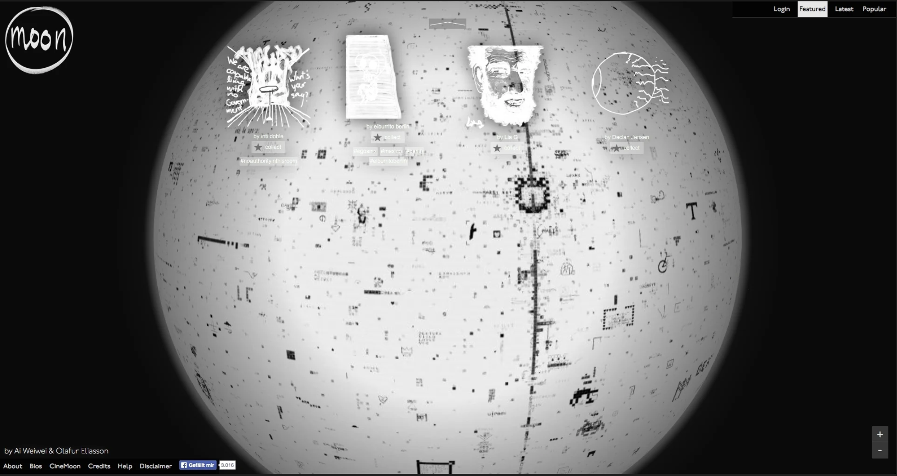

Astral Traveler - We are the Universe
Curated by Jason Lei
This exhibition likens the web as a sea of stars; sometimes there only exists a few bright stars in the sky, other times there are just too many stars for the human mind to comprend. This galaxy, universe, analog or digital, is fitting because just like the night sky, the Internet holds the past, the present and the seeds of the future. StarryNight (1999) highlights the interconnectedness of the web, even randomness is not truly random. Moon (2013) embodies that the universe, our universe, is an amalgamation of everyone’s experiences. Sad, happy, silly, rage, to feel is to be human, and to express these feelings is to leave proof that we are human. The Wolfman Museum (2017), located deep in space, serves as an interactive archive where we can bear witness to all that the universe can offer. These art pieces serve as a reminder that we hold the experiences of those we love and those who come before us. Just like the night sky, we carry the past, we shine brightly and we hold the materials to create a new future.

StarryNight was developed as an “artistic interface for the curated, online archive” of Rhizome’s email discussion list, when an email that corresponded with each star was accessed, the star would light up.

Moon offered a way for people around the world to connect with others online through a virtual, collaborative drawing platform. Starting as a blank “moon”, as more people leave their mark on the moon’s surface, it becomes a mosaic of everyone’s contributions.

The Wolfman Museum is a virtual public space that is home to internet archives, digital libraries, art exhibitions and multimedia educational tools. Located “deep in space”, visitors can explore all the museum has to offer, creating a more tangible internet experience.